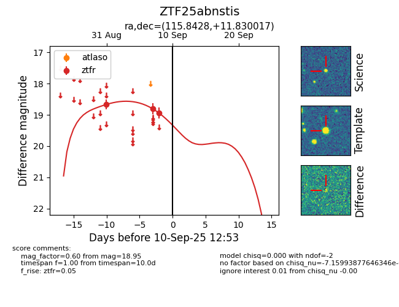

FINK: ZTF25abnstis
Lasair: ZTF25abnstis
ALeRCE: ZTF25abnstis
ZTF25abnstis (ztf,fink)
equatorial (ra, dec) = (115.8428,+11.83002)
galactic (l, b) = (208.0068,+16.80921)

last ztfr=18.95
3 ztfr detections